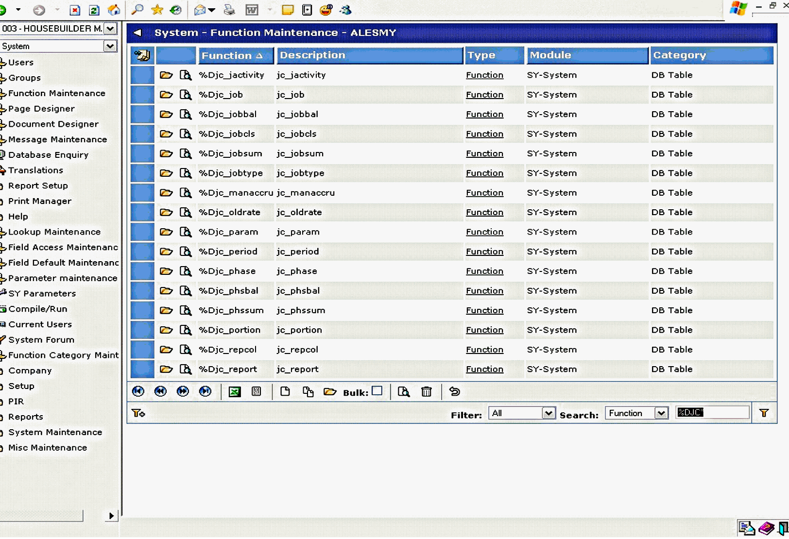
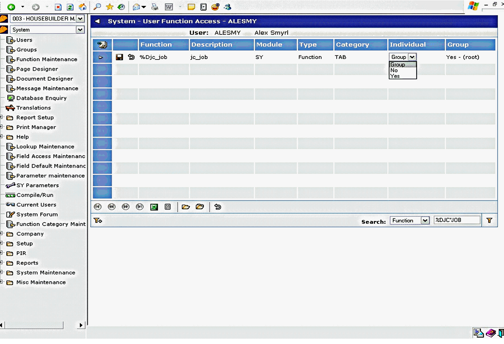
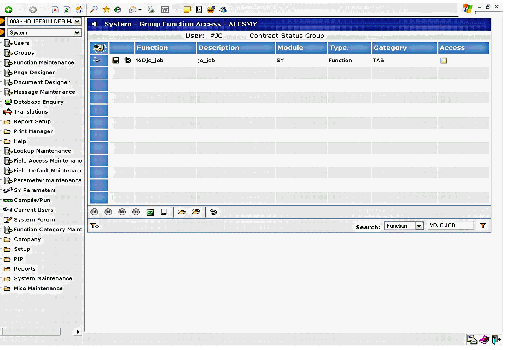

It is possible to control access to the Database
This is controlled via standard

To amend Function Access in
The individual access can then be assigned to Yes, No, or Group as with Function Access Maintenance in COINSplus.

By default, all tables are only initially available to the "ROOT" User Group.
To amend a Group access, simply select Groups from the Menu, click on the hyperlink on the Group ID, and grant access via the

NOTE: Function Access Maintenance can be performed in either COINSplus or COINS OA - both access the same data.